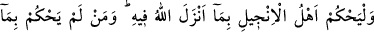
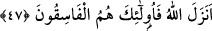

kendinden önceki Tevrat’ı tasdîk eden, takvâ sahiplerine bir hidâyet ve öğüt olan
kendinden önce İncil’i verdik.
“O peygamberlerin peşinden kendisinden önce gelen Tevrat’ı tasdik edici olarak
Meryem oğlu Îsâ’yı gönderdik.” Bu âyet yukarıdaki “Gerçekten Tevrat’ı biz
indirdik...” âyetine atfedilmiştir. Yani yukarıda zikri geçen peygamberlerin peşinden,
arkalarından onu gönderdik, onlardan sonra onu getirdik demektir.
Âyetin mânâsı şu şekildedir: Zikrettiğimiz peygamberlerin ardından Îsâ’yı gönderdik
ve onu onların izinden giden biri kıldık. “Ona da” Tevrat’ta olduğu gibi “içinde
hidâyet ve nur bulunan, kendinden önceki Tevrat’ı tasdik eden, takvâ sahiplerine bir
hidâyet ve öğüt olan İncil’i verdik.”
Âyette “İçinde hidâyet bulunan” buyurularak İncil hidâyeti de ihtivâ eden bir kitap
olarak tanıtıldıktan sonra “takvâ sahiplerine bir hidayet...” buyurularak tamâmı hidâyet
kılındığı belirtilmiştir. “Takvâ sahiplerine bir hidâyet ve öğüt...” olarak tahsis
edilmesi onların İncil’in yol göstermesi ile hidâyete ermeleri ve onun faydalarından
yararlanmaları sebebiyledir.
Hâfız şöyle demiştir:
Süleyman’ın yüzüğü gibi bir yüzük olmazsa şayet
Yüzüğün nakışı ne üstünlük kazandırır?
Süleyman (a.s.) meşrebinde olan yüzükten yararlandığı gibi takvâsı ağır basan da,
kitaptan istifade eder.
47- İncil’e inananlar, Allah’ın onda indirdiği (hükümler) ile hükmetsinler. Kim
Allah’ın indirdiği ile hükmetmezse işte onlar fâsıklardır.
“İncil’e inananlar, Allah’ın, onda indirdiği (hükümler) ile hükmetsinler.” Yani Biz
ona İncil’i verdik ve “İncil’e inananlar, Allah’ın onda indirdikleriyle hükmetsin” dedik.
“Kim” inkâr ederek ve hor görerek “Alah’ın indirdiği ile hükmetmezse işte onlar
fâsıklardır” Âsîler ve îmandan çıkan kimselerdir. Bu âyet İncil’de ahkâmın
bulunduğuna, Hz. Îsâ (a.s.)’ın müstakil bir şerîata sahip olduğuna ve yalnız Tevrat’ta
olanlarla değil az veya çok olsa da İncil’de bulunan hükümlerle amel etmesinin
emredilmiş olduğuna delalet etmektedir.
Âyette hâkimler için de büyük tehdit vardır. Bir hadîs-i şerifte şöyle buyurulmuştur:
“Âdil hâkim kıyâmet günü getirilir ve öyle şiddetli bir azapla karşılaşır ki, iki hurma
tanesi hakkında bile olsa hiç kimse için hüküm vermemiş olmayı temennî eder.”[322]